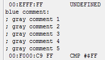

Содержание
При наличии символов кириллицы в файле с комментариями, желательно делать бэкап файла перед его ручном редактировании, и в особенности при изменении кодировки. По неопытности можно запросто потерять все свои русские комментарии в данном файле. Правильная кодировка для отображения латинских символов и символов кириллицы в Debugger'е и текстовом редакторе - ANSI.
Комментарии на адрес записывается с новой строчки. Сначала идет символ "$" и 16-битный адрес. Затем символ "#", где записывается текст для Name. В конце еще один символ "#", здесь можно дописать текст для Comment.
В конце файла обязательно должна быть пустая строка. Без нее комментарий с вышестоящей строки не будет отображаться в Debugger'е.
После изменения файла нужно сохранить его, а затем в Debugger'е нажать кнопу Reload Symbols, чтобы тот повторно прочитал .nl файлы. Если в файле будут замечены ошибки, Debugger сообщит об этом после нажатия кнопки.

Без нажатия этой кнопки Debugger не будет синхронизирован с твоими новыми изменениями в файле. Это приведет к тому, что после добавления/редактирования комментариев через Debugger твои изменения в файле в итоге не сохранятся.
Альтернатива нажатию кнопки - повторно открыть ROM в эмуляторе.
Массив удобен для комментирования сразу нескольких соседних адресов. Может применяться для однотипных адресов различных объектов, вместо добавления комментария на каждый отдельный адрес. Для создания массива с одинаковыми именами нужно после начального адреса добавить символ "/" и записать размер массива Hex-числом.

В данном случае начало массива - $0090, а размер массива - 8 байт (#$00-#$07). Вот как будут выглядеть такие комментарии по адресам $0090-$0097.
Даже если некий адрес из массива уже имеет комментарий в .nl файле, по этому адресу все равно будет отображаться имя из массива.
Если отредактировать комментарий любого адреса из массива через Debugger/Hex Editor, то после сохранения комментария все адреса из массива будут по отдельности записаны в .nl файл.
На данный момент функция работает криво.
Можно добавлять больше строчных серых комментариев, которые будут отображаться при показе этого адреса в Debugger'е. Для этого после основной строки комментария адреса нужно добавить новую строку, ввести символ "\" и дописать еще один комментарий.

Предположительно должны нормально отображаться дополнительные серые строки, но на практике не показывается первый символ и портится цвет нижестоящего текста.
